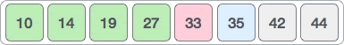
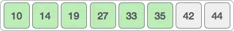
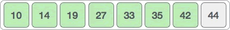

选择排序算法
对数据量较少的序列实现升序或降序排序，可以考虑使用选择排序算法，它对应的时间复杂度为
排序排序算法对含有 n 个元素的序列实现排序的思路是：每次从待排序序列中找出最大值或最小值，查找过程重复 n-1 次。对于每次找到的最大值或最小值，通过交换元素位置的方式将它们放置到适当的位置，最终使整个序列变成有序序列。
举个例子，我们使用选择排序算法对 {14, 33, 27, 10, 35, 19, 42, 44} 完成升序排序，需要经历以下几个步骤：
1) 遍历整个待排序序列，从中找到最小值 10 并与第一个元素 14 交换位置：

2) 待排序序列变成 {33, 27, 14, 35, 19, 42, 44}，从中找到最小值 14 并与 33 交换位置：

3) 待排序序列变成 {27, 33, 35, 19, 42, 44}，从中找到最小值 19 并与 27 交换位置：

4) 待排序序列变成 {33, 35, 27, 42, 44}，从中找到最小值 27 并与 33 交换位置：

5) 待排序序列变成 {35, 33, 42, 44}，从中找到最小值 33 并与 35 交换位置：
6) 待排序序列变成 {35, 42, 44}，从中找到最小值 35，它的位置无需变动：
7) 待排序序列变成 {42, 44}，从中找到最小值 42，它的位置无需变动：
对于包含 n 个元素的待排序序列，选择排序算法中只需要找出 n-1 个“最小值”，最后剩下的元素的值必然最大。由此，我们就得到了一个升序序列 {10, 14, 19, 27, 33, 35, 42, 44}。
结合伪代码，如下为使用选择排序算法对 {14, 33, 27, 10, 35, 19, 42, 44} 实现升序排序的 C 语言程序：
如下为使用选择排序算法对 {14, 33, 27, 10, 35, 19, 42, 44} 实现升序排序的 Java 程序：
如下为使用选择排序算法对 {14, 33, 27, 10, 35, 19, 42, 44} 实现升序排序的 Python 程序：
以上程序的输出结果均为：
O(n2)。排序排序算法对含有 n 个元素的序列实现排序的思路是：每次从待排序序列中找出最大值或最小值，查找过程重复 n-1 次。对于每次找到的最大值或最小值，通过交换元素位置的方式将它们放置到适当的位置，最终使整个序列变成有序序列。
举个例子，我们使用选择排序算法对 {14, 33, 27, 10, 35, 19, 42, 44} 完成升序排序，需要经历以下几个步骤：
1) 遍历整个待排序序列，从中找到最小值 10 并与第一个元素 14 交换位置：
2) 待排序序列变成 {33, 27, 14, 35, 19, 42, 44}，从中找到最小值 14 并与 33 交换位置：
3) 待排序序列变成 {27, 33, 35, 19, 42, 44}，从中找到最小值 19 并与 27 交换位置：
4) 待排序序列变成 {33, 35, 27, 42, 44}，从中找到最小值 27 并与 33 交换位置：
5) 待排序序列变成 {35, 33, 42, 44}，从中找到最小值 33 并与 35 交换位置：

6) 待排序序列变成 {35, 42, 44}，从中找到最小值 35，它的位置无需变动：

7) 待排序序列变成 {42, 44}，从中找到最小值 42，它的位置无需变动：

对于包含 n 个元素的待排序序列，选择排序算法中只需要找出 n-1 个“最小值”，最后剩下的元素的值必然最大。由此，我们就得到了一个升序序列 {10, 14, 19, 27, 33, 35, 42, 44}。
选择排序算法可以看作是冒泡排序算法的“改良版”。和后者相比，选择排序算法大大减少了交换数据存储位置的操作。
选择排序算法的具体实现
如下是描述选择排序算法的伪代码：
selection_sort(list): //list 为待排序序列
n <- length(list) //记录序列中的元素个数
for i <- 1 to n-1: //从第 1 个元素一直遍历至倒数第 2 个元素
min <- i //初始化最小值为第 i 个元素
for j <- i+1 to n: // 从第 i+1 个元素开始开始遍历序列
if list[j] < list[min]: //查找待排序序列中的最小值
min = j
if min != i: //如果最小值所在的位置不为 i，交换最小值和第 i 个元素的位置
swap list[min] , list[i]
return list
结合伪代码，如下为使用选择排序算法对 {14, 33, 27, 10, 35, 19, 42, 44} 实现升序排序的 C 语言程序：
#include <stdio.h>
#define N 8 //设定待排序序列中的元素个数
//list[N] 为存储待排序序列的数组
void selection_sort(int list[N]) {
int i, j;
int min,temp;
//从第 1 个元素开始遍历，直至倒数第 2 个元素
for (i = 0; i < N-1; i++) {
min = i; //事先假设最小值为第 i 个元素
//从第 i+1 个元素开始遍历，查找真正的最小值
for (j = i + 1; j < N; j++) {
if (list[j] < list[min]) {
min = j;
}
}
//如果最小值所在位置不为 i，交换最小值和第 i 个元素的位置
if (min != i) {
temp = list[min];
list[min] = list[i];
list[i] = temp;
}
}
}
int main() {
int i;
int list[N] = { 14,33,27,10,35,19,42,44 };
//对待排序序列做选择排序
selection_sort(list);
//输出已排序序列中的各个元素
for (i = 0; i < N; i++) {
printf("%d ", list[i]);
}
}
如下为使用选择排序算法对 {14, 33, 27, 10, 35, 19, 42, 44} 实现升序排序的 Java 程序：
public class Demo {
// list[N] 为存储待排序序列的数组
public static void selection_sort(int[] list) {
int length = list.length;
int i, j;
// 从第 1 个元素开始遍历，直至倒数第 2 个元素
for (i = 0; i < length - 1; i++) {
int min = i; // 事先假设最小值为第 i 个元素
// 从第 i+1 个元素开始遍历，查找真正的最小值
for (j = i + 1; j < length; j++) {
if (list[j] < list[min]) {
min = j;
}
}
// 如果最小值所在位置不为 i，交换最小值和第 i 个元素的位置
if (min != i) {
int temp = list[min];
list[min] = list[i];
list[i] = temp;
}
}
}
public static void main(String[] args) {
int[] list = { 14, 33, 27, 10, 35, 19, 42, 44 };
selection_sort(list);
// 输出已排好序的序列
for (int i = 0; i < list.length; i++) {
System.out.print(list[i] + " ");
}
}
}
如下为使用选择排序算法对 {14, 33, 27, 10, 35, 19, 42, 44} 实现升序排序的 Python 程序：
#待排序序列
list = [14,33,27,10,35,19,42,44]
def selection_sort():
length = len(list)
#从第 1 个元素开始遍历，直至倒数第 2 个元素
for i in range(length-1):
min = i #事先假设最小值为第 i 个元素
#从第 i+1 个元素开始遍历，查找真正的最小值
for j in range(i+1,length):
if list[j] < list[min]:
min = j
#如果最小值所在位置不为 i，交换最小值和第 i 个元素的位置
if min != i:
list[min],list[i] = list[i],list[min]
selection_sort()
# 输出已排好序的序列
for i in list:
print(i,end=" ")
以上程序的输出结果均为：
10 14 19 27 33 35 42 44
关注公众号「站长严长生」，在手机上阅读所有教程，随时随地都能学习。本公众号由C语言中文网站长亲自运营，长期更新，坚持原创。

微信扫码关注公众号